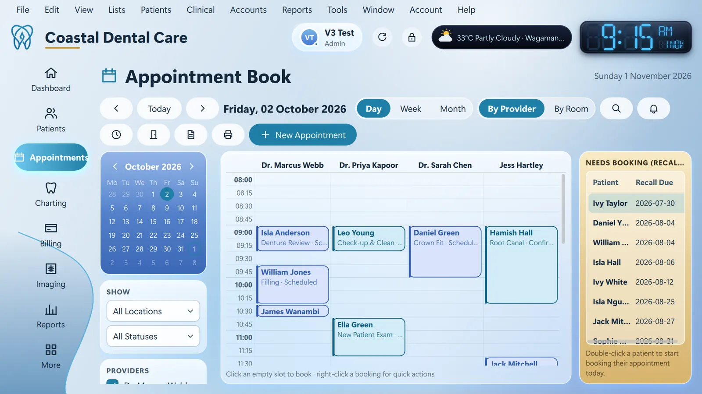
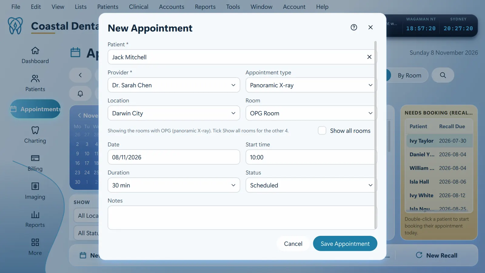
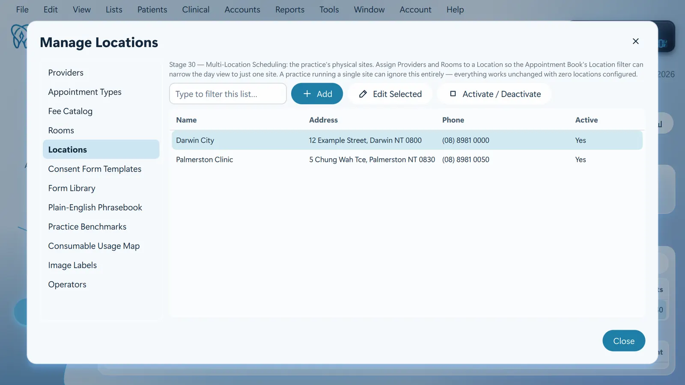
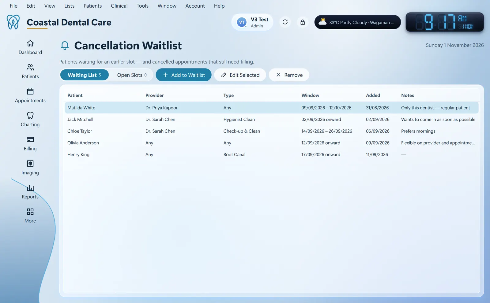
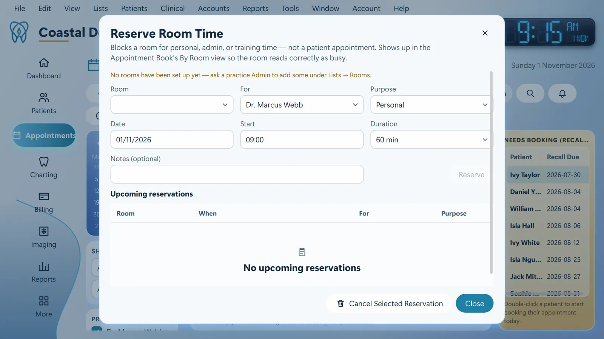

01 / 07 · Appointment Book
The Appointment Book
Appointment Book · Ctrl+Shift+N
Book, move, cancel and manage every appointment in one calendar, filtered to the dentists, rooms and statuses you need.
- Day by provider or by room, Week to spot gaps and clashes, and Month for busy and quiet days at a glance.
- Statuses as the day goes: Scheduled, Confirmed, Arrived, In Chair, Completed, Cancelled and Did Not Attend. Right-click for a quick change.
- Book by double-clicking an empty slot. The patient's name autocompletes as you type.
- A dentist who's already booked asks before you double-book them. A room that's already taken is refused.
- Back-to-back appointments sit neatly in the next row, and only real overlaps are marked double-booked.
- Slot rows of 5, 10 or 15 minutes, set for the practice.
- The Dashboard's “Unconfirmed tomorrow” alert opens tomorrow's book filtered to exactly those appointments.
- Print the day list as a PDF.

02 / 07 · Appointment Book
The right room for the job
Appointment → Room
Each appointment type can say what its room needs, such as an OPG for a panoramic X-ray or a surgical set-up for an extraction. Booking it only offers the rooms that can do it.
- A note under the Room box says why some rooms aren't offered.
- Show all rooms lists the rest, each marked with what it lacks.
- Booking a room without what's needed asks first, and keeps the reason and who booked it on the appointment.
- Rooms and what they can do are set on the practice's floor plan.

03 / 07 · Appointment Book
Several locations, one book
Lists → Manage Locations
A practice with more than one site runs every location on the same database and the same patient list.
- Each dentist and room belongs to a location.
- A Location filter narrows the whole book to one site's dentists and rooms.
- A front-desk login tied to one site opens on that site automatically.
- Admin and Owner see all locations and switch freely.
- A single-site practice simply ignores it.

04 / 07 · Appointment Book
Planned next visits
Chairside · Charting → Plan Next Visit
The dentist plans the next visit before the patient leaves the chair, and reception books it, so nobody slips through the cracks.
- Choose the type, the interval, the length, the dentist, the priority, the treatment it's for and a note for reception.
- Ping Reception sends a chat message to the desk.
- The Planned Visits page lists patients seen today first, then by target date. Book opens the book at the target week, already filled in.
- Will Call keeps it open with a follow-up date. Decline needs a reason.
- A visit well past its target becomes Lapsed, shows under “Planned but not booked” and counts towards the patient's churn score.

05 / 07 · Appointment Book
Cancellation waitlist
More → Waitlist
Keep a list of patients who want to come in sooner, so a cancellation is filled in one click.
- Add a patient with any dentist or a particular one, any type or a particular one, and the dates they can come.
- When a slot opens, Notify sends the matching patients a one-time link to claim it by SMS or email.
- The first to click gets the slot and everyone else's link goes stale, so it's never double-booked.
- Cancelling an appointment that someone on the list would take offers to notify them straight away.
- Open Slots lists every cancelled future appointment that could be refilled.

06 / 07 · Appointment Book
Recalls
Communications → Reminders & Recalls
A recall is the practice's reminder that a patient is due back, whether or not they already have an appointment.
- Create a recall with its type (6-Month Checkup, say), due date and note.
- Mark it Due, Overdue, Booked or Completed as things happen.
- Work down the list of everyone due and overdue, sending a reminder from the same list.
- Recalls Due on the Dashboard opens the patient's recall with a double-click.

07 / 07 · Appointment Book
Reserve a room, request leave
Tools → Reserve Room Time · Request Leave
Dentists can manage their own time without asking the front desk.
- Reserve a room for training, paperwork or anything that isn't a patient, so the book shows it as busy.
- Request leave for a date range with a reason. It stays Pending until an Admin or Owner decides.
- The decision shows on the same screen next time the dentist opens it.
